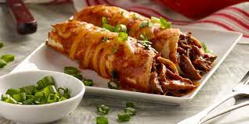

Beef Enchiladas

Super Tasty Tex-Mex Style Beef Enchiladas
After moving away from Houston I found it very difficult to get good tex-mex.
Luckily I stumbled across House of Yumm. This site gots all the good stuff.
Ingredients
- 1 pound ground beef
- 1 tablespoon Chili Powder
- 1/2 teaspoon Salt
- 3/4 teaspoon Cumin
- 1/2 teaspoon Dried Oregano
- 1/4 teaspoon Garlic Powder
- 1/4 teaspoon Onion Powder
- 1/4 cup tomato sauce
Homemade Enchilada Sauce
- 1/4 cup oil or butter, canola, vegetable, or avocado oil
- 1/4 cup all purpose flour
- 1/2 teaspoon ground black pepper
- 3/4 teaspoon salt
- 1 teaspoon garlic powder
- 1 teaspoon onion powder
- 2 teaspoons ground cumin
- 1/2 teaspoon dried oregano
- 1 tablespoon chili powder
- 2 cups beef broth, LOW or NO SODIUM
- 1 tablespoon tomato paste
Enchiladas
- 1/4 cup canola oil
- 12-15 white corn tortillas
- 1 cup Monterey Jack Cheese, shredded
Steps
Ground Beef
- Cook the ground beef over medium heat.
Break the beef up while it cooks, cook until browned and no longer pink.
- Turn the heat off. Drain the grease. Add the seasonings to the meat, stir to combine. Then stir in the tomato sauce. Set aside.
Homemade Enchilada Sauce
- Heat the oil or butter in a medium size skillet over medium heat.
- Add in the flour and stir to mix. Will be a thick mixture. Allow this to cook for just 1-2 minutes.
- Add in the spices. Stir to form a thick paste.
- Stir in the broth and tomato paste. Stir until smooth. Continue to heat to just below a simmer, sauce will thicken slightly.
Enchiladas
- Preheat oven to 350 degrees F.
- Spread enchilada sauce into the bottom of a glass 9x13 baking dish. Set aside.
- Heat vegetable or canola oil over medium heat in a medium size skillet.
- Once the oil is hot enough to bubble up when a tortilla is dipped in, gently lay the tortilla into the oil using tongs. Allow the tortilla to cook in the oil for about 10-15 seconds, then flip and cook the other side. (Tortillas will not be browned and crisp, we still want them flexible)
- Once all tortillas have been fried, dip into the enchilada sauce. Or brush the sauce on.
- Lay the tortilla down and add a spoonful of ground beef and a small sprinkle of cheese.
- Roll the tortillas and lay into a baking dish, seam side down. Continue until the dish is filled.
- Spread leftover sauce over the top of the enchiladas. Sprinkle with leftover shredded cheese.
- Bake for 10 minutes until the cheese is melted.
- Serve warm and enjoy.